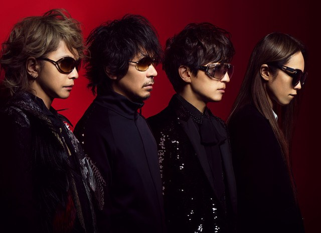

Discographie générale


Cette page est consacré à la présentation succinte de la discographie de L'Arc~en~Ciel : pour voir la discographie détaillée, c'est ici !
Dans un souci de simplicité, seuls les albums sont présentés. Il n'y aura donc ni singles, ni VHS, ni DVD ni blu-ray.
| Date | Albums |
|---|---|
| 27/04/1993 | DUNE |
| 14/07/1994 | Tierra |
| 01/09/1995 | heavenly |
| 12/12/1996 | True |
| 25/02/1998 | HEART |
| 01/07/1999 | ray |
| 01/07/1999 | ark |
| 28/06/2000 | ectomorphed works |
| 30/08/2000 | REAL |
| 14/03/2001 | Clicked Singles Best 13 |
| 19/03/2003 | The Best of L'Arc-en-Ciel 1994-1998 |
| 19/03/2003 | The Best of L'Arc-en-Ciel 1998-2000 |
| 19/03/2003 | The Best of L'Arc-en-Ciel c/w |
| 31/03/2004 | SMILE |
| 21/04/2004 | DUNE 10th Anniversary Edition |
| 22/06/2005 | AWAKE |
| 13/12/2006 | 『ark』 15th Anniversary Expanded Edition |
| 13/12/2006 | 『ray』 15th Anniversary Expanded Edition |
| 21/11/2007 | KISS |
| 10/03/2010 | QUADRINITY ～MEMBER'S BEST SELECTIONS～ |
| 16/02/2011 | TWENITY 1991-1996 |
| 16/02/2011 | TWENITY 1997-1999 |
| 16/02/2011 | TWENITY 2000-2010 |
| 09/03/2011 | TWENITY BOX 【完全生産限定盤】 |
| 08/02/2012 | BUTTERFLY |
| 28/03/2018 | 25th L'Anniversary LIVE |
Plus de détails sur les albums ? VOIR LA DISCOGRAPHIE DÉTAILLÉE ! Ou alors, retour à l'accueil ?